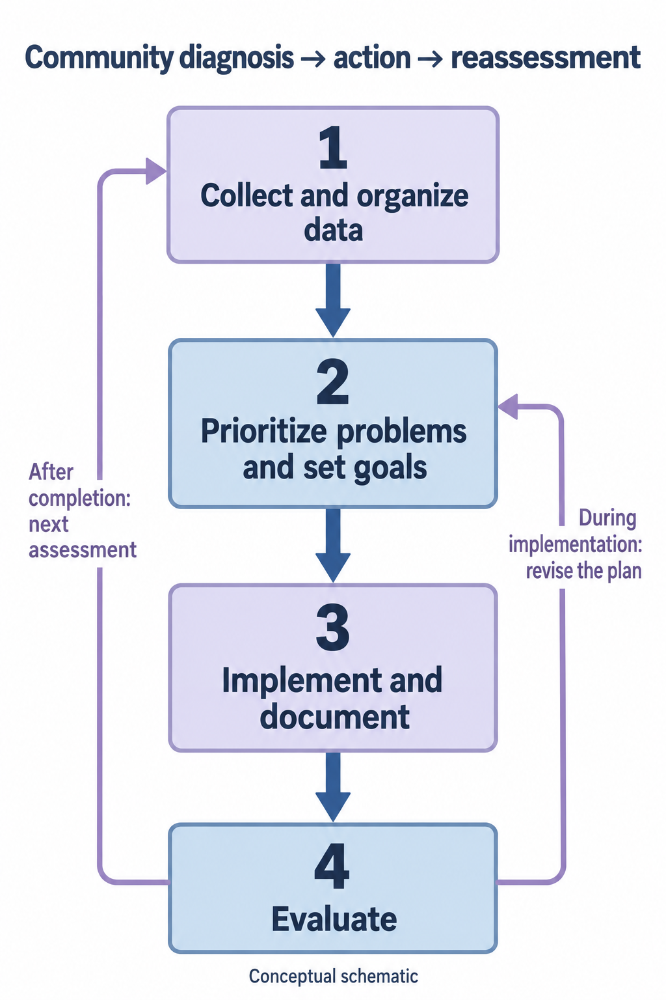

教材讲义
一、社区诊断的定义、目的和资料
社区诊断是运用调查和已有资料，分析社区人群主要健康问题、影响因素、卫生需要及资源，作为制定、实施和评价社区卫生计划的依据。对象是人群，不等于为许多个体作临床诊断后简单相加。
| 资料类别 | 主要内容 |
|---|---|
| 人口与健康状况 | 人口数量及构成、出生与死亡、寿命、发病和患病、伤残及重点人群 |
| 健康相关因素 | 行为生活方式、健康观念、危险暴露及服务利用 |
| 环境与社会条件 | 自然环境、经济教育、文化及社会支持 |
| 卫生资源与行动能力 | 机构人员、可及性、设施经费、社区组织及可协调资源 |
| 资料可来自健康档案、常规报告和既有统计等二手资料，也可通过观察、访谈及调查取得一手资料。使用前核对来源、时间、对象、指标定义和完整性；比例必须明确分子、分母与观察期间，不能把门诊病人构成当作全社区患病率。 |
指南补充 · 出处
配图出处与待核资料
复习随记
教材讲义
二、社区诊断与行动的四步闭环
- 收集和整理资料：界定社区及目标人群，明确问题与指标，选用适当方法，完成质量控制、分类和分析。
- 确定主要及优先问题：综合疾病负担与严重性、影响人数、居民感受和需要、危险因素是否可改变、现有资源、技术与费用可行性及紧迫性。严重但暂难干预的问题仍需说明和衔接，不能因不便考核而忽略。
- 制订并实施计划：把问题转成具体目标，明确对象、措施、人员、时间、资源、转诊协作、过程记录和评价指标；争取居民及相关部门参与。
- 评价效果并反馈：实施中评价覆盖、参与、质量与资源使用，完成后评价目标实现和健康结果，解释未达标原因，修订下一轮计划。 排序逻辑：先识别须立即处置的紧迫风险，再比较“问题重要性×干预必要性与可行性”。同一社区不同阶段的优先顺序可能改变，应说明所据证据及决策过程，避免仅按个人兴趣选题。
指南补充 · 出处
这是大纲所需的社区计划方法框架；未虚构调查结果、声称已实施干预或获得效果。
配图 · 教材对照（2026-10-25）
社区诊断的四个步骤与评价反馈

1收集整理资料→2确定主要健康问题及优先顺序、设定计划与目标→3实施社区计划并真实记录→4计划效果评估。进行中评价可修正计划（回到2）；结束后评价为下一次社区诊断提供依据（回到1）。仅表示教材的工作链与反馈，不对应真实个人或某个社区数据。
自制概念流程图，AI辅助绘制；非教材原图。
出处：社区诊断—行动—再诊断（自制示意）；本项目自制示意图（AI辅助）；未复制原书图。
配图出处与待核资料
复习随记
教材讲义
三、社区调查与评价如何保证可用
调查三阶段：设计、实施、分析。设计须明确八方面：①目的与指标；②对象、时间、地点及人员；③调查方法；④资料收集方式；⑤调查项目与表格；⑥实施与质量控制；⑦资料整理、分组；⑧分析及混杂因素处理。根据目的选择普查或抽样，以及适宜研究设计，统一培训和指标口径。 评价分层：过程看活动是否按计划开展、目标人群覆盖、参与和服务质量；结果看知识行为、危险因素、规范管理及控制情况；更长期关注疾病负担、功能和生活质量。应预先设定基线、观察期及可比对象，结合资源投入判断效果与效益。 解释变化：筛查加强可能先使检出患病人数上升，不能仅据检出数量增加判定预防失败；对健康结局改善的判断应考虑人群、时间、测量方法及其他干预变化。 发现未满足需要后，由全科团队协调个体诊疗、家庭支持和群体措施；评价资料再次进入社区诊断，形成持续改进。
指南补充 · 出处
复习随记